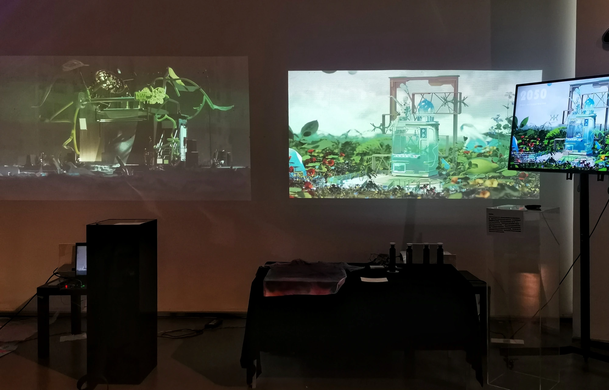

Cloth and dye bottles control two projected textile futures.

The installed work. Two physical stations face two projected futures.
I built the scenes, animations and physical interactions, using Arduino and TouchDesigner to connect each object to its projection.
My role
Independent project: concept, 3D scene development, animation, Arduino / TouchDesigner interaction and installation.
Medium
Two physical inputs, two projected worlds. Blender, Cinema 4D, Arduino and TouchDesigner.
Pull cloth. Lift a dye bottle.
Each station uses an object from textile production. Pulling the cloth triggers one scene; lifting the dye bottle changes the other.
Pull the cloth
Extinction Express · pressure-sensor input
9-second original exhibition recording, with ambient audio.
Handle the cloth
A visitor pulls fabric at the black-box station.
Register the event
The pressure-sensor circuit supplies an input event to Arduino.
Change the scene
TouchDesigner switches the animation from moving cloth to a rising forest of steel forms.
Lift the dye bottle
Post Anthropocene · distance-sensor input
13-second original recording. Bottle handling appears in the second half.
Pick up a bottle
The visitor moves a dye bottle placed in front of the sensor.
Read a distance change
An ultrasonic sensor sends distance values through Arduino.
Trigger production
The animation shows a mechanical claw moving a dye element, followed by a packaged garment.
Two textile futures
“Extinction Express” imagines textile production in an exhausted landscape. “Post Anthropocene” places an alternative production system among living plants. Visitors encounter the two scenes through separate physical stations.
A transparent machine, dye elements and a planted landscape frame the alternative.
How the sensors control the animation
I connected the physical inputs through Arduino serial communication to TouchDesigner. The two routes use different signals: an event count for the cloth and a distance reading for the bottle.
Original TouchDesigner network for Extinction Express
Event-driven switching
The preserved Arduino code reads digital pin 7 and sends an incrementing event count at 9600 baud. This is a trigger, not a continuous measurement of pulling force.
Original TouchDesigner network for Post Anthropocene
Distance-driven switching
The second circuit uses trigger and echo pins to calculate distance. The value is sent over serial to the visual system, where it controls the animation state.
The output mechanism in the alternative production scene.
The exhibition setup
The two stations place cloth, dye bottles and electronics in front of the projections. These photographs show the layout and visitors using the installation.
The recordings document the working interactions and visitors using the installation. They do not establish whether the work changed environmental knowledge or behaviour, or how visitors interpreted the two futures.
Independent project by Jiaxuan Gong. The scenario framing draws on Arup’s 2050 Scenarios: Four Plausible Futures. Visual development included early AI-generated references and adapted 3D assets. Images, code and recordings come from the original project.